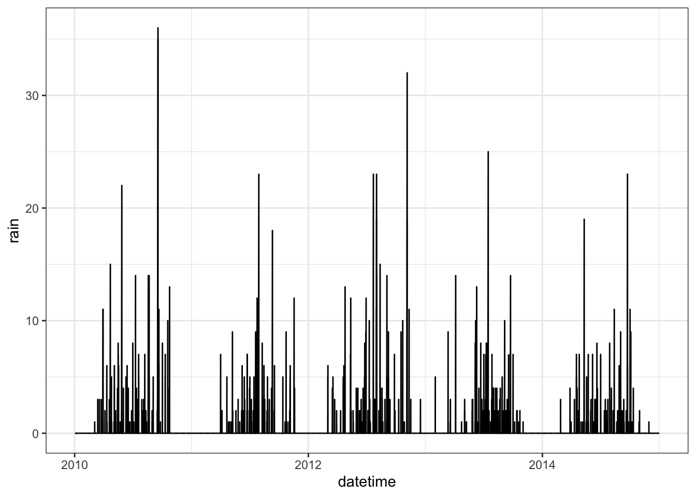

In this lab, we’ll look at working with time series data in deep learning models. The trick with all time series is to make predictions that consider not just the current time step, but also information from previous time steps. We’ll do this in two ways here. First, we’ll process the data for a ‘predict-ahead’ model. In this, the outcome or target at time \(t\) will be modeled using the set of covariates at time \(t-1\), plus the value of the outcome at \(t-1\). This is a short-term predictive model in which we only use information from the previous time step to predict the target for the next time step. The second approach will be to use a recurrent neural network. These are models that are designed to incorporate a memory track, that retains some information about the relationship between variables from the previous time steps. We’ll use the LSTM model (long/short-term memory), as this can include information over short and longer time steps. We’ll build a series of models here of increasing complexity. As you go through this, pay attention to the relative gains (or losses) in predictive skill relative to the increases in model complexity.
The models we’ll build are modified from: https://machinelearningmastery.com/multivariate-time-series-forecasting-lstms-keras/, as well as the Deep Learning with Python book (Chollet 2024).
Objectives
Process data for time series modeling
Build and test a recurrent neural network (LSTM)
Extend the base LSTM model
Data processing
The data we’ll use is a time series of hourly air quality measurements from the US Embassy in Beijing from 2010 to 2014, together with corresponding weather data from Beijing Capital International Airport. Start by loading some of the libraries we’ll need:
set.seed(42)library(reticulate)
Warning: package 'reticulate' was built under R version 4.4.1
library(tidyverse)
── Attaching core tidyverse packages ──────────────────────── tidyverse 2.0.0 ──
✔ dplyr 1.1.4 ✔ readr 2.1.5
✔ forcats 1.0.0 ✔ stringr 1.5.1
✔ ggplot2 3.5.1 ✔ tibble 3.2.1
✔ lubridate 1.9.3 ✔ tidyr 1.3.1
✔ purrr 1.0.2
── Conflicts ────────────────────────────────────────── tidyverse_conflicts() ──
✖ dplyr::filter() masks stats::filter()
✖ dplyr::lag() masks stats::lag()
ℹ Use the conflicted package (<http://conflicted.r-lib.org/>) to force all conflicts to become errors
library(keras)
Now load the data and take a look at the first few lines:
dat <-read.csv("./datafiles/pollution.csv")head(dat)
The column labelled pollution is the target for prediction (this is PM2.5 measurements in ppb). Let’s plot out the series to see the trends and patterns (you should see a fairly strong seasonal cycle in most of the variables)
dat$datetime =ymd_hms(dat$date)var_to_plot =c("pollution", "dew", "temp", "press", "wnd_spd", "snow", "rain")for (i in var_to_plot){ p1 =ggplot(dat, aes(x = datetime, y = .data[[i]])) +geom_line() +theme_bw()print(p1)}

We need to deal with the wind direction variable which is a string. We’l do this as a double step in R - first convert to a factor, then to a numeric values
Normally, we’d only normalize the features, but as we are going to use the PM2.5 value from the previous time step as an additional feature, we need to normalize this as well. As this means we will be modeling the normalized PM2.5 values, we’ll store the minimum and maximum. This will allow us to back convert any predictions we make to parts per billion.
To start with, we’ll build a simple neural network with a single densely connected layer with 50 nodes between the input and output. We’ll build a pretty simple model with
A input layer. Each observation going into the model is the set of 7 features (temperature, etc) from the previous time step and the pollution from the previous step, which gives a shape of (8,)
A densely connected layer with 50 nodes
An output layer. We’re only predicting the pollution value, so there’s only a single output. Note that as this is a continuous outcome, we don’t specify an activation function (as this would constrain the output of the model).
## ------------------------------------------------------------------------- #### Dense# initialize our modelmodel <-keras_model_sequential()# our input layermodel |>layer_dense(input_shape =c(8), units =50)model |>layer_dense(units =1) # output# look at our model architecturesummary(model)
## Compile itmodel |>compile(optimizer =optimizer_adam(), loss ="mse", metrics =c("mae"))# Actually train our model! This step will take a whilehistory <- model |>fit(x = X_train, # sequence we're using for prediction y = y_train, # sequence we're predictingbatch_size =64, # how many samples to pass to our model at a timeepochs =10, # how many times we'll look @ the whole datasetvalidation_data =list(X_test, y_test),shuffle =FALSE) #
## -------------------------------------------------------------------------------------------# Evaluate the model on the validation dataresults <- model |> keras::evaluate(X_test, y_test, verbose =0)results
loss mae
0.002147793 0.037298840
Model 2: LSTM
For the next model, we’ll add an LSTM layer. This is a more complex layer, that includes weights that link inputs to the outputs, but also that link a saved or memory state to the current input.
However, before setting this up, we need to reformat the input data. For time series models, the input shape needs to be three dimensional (i,j,k), where i is the number of samples (this is the number of hourly observations), j is the number of time steps in each sequence and k is the number of features. j controls the number of previous time steps linked to an outcome, and this is a key parameter: higher values for k means that the model is considering a longer period of observations prior to the time step we are trying to predict. We’ll start by reusing the dataset we created for the densely connected model above. All we need to do here is to use the reshape method to add the additional axis for j here:
n_obs =365*24X_train <-data.matrix(X[1:n_obs, ])X_train <-array(X_train, dim =c(n_obs, n_steps, n_vars))y_train <- y[1:n_obs]X_test <-data.matrix(X[n_obs:nrow(X), ])X_test <-array(X_test, dim =c(nrow(X_test), n_steps, n_vars))y_test <- y[n_obs:nrow(X)]
## ------------------------------------------------------------------------- #### LSTM# initialize our modelmodel <-keras_model_sequential()# our input layermodel %>%layer_lstm(input_shape =dim(X_train)[2:3], units =50)model %>%layer_dense(units =1) # output# look at our model architecturesummary(model)
## Compile itmodel %>%compile(optimizer =optimizer_adam(learning_rate =1e-3), loss ="mse", metrics =c("mae"))
Now train:
history <- model %>%fit(x = X_train, # sequence we're using for prediction y = y_train, # sequence we're predictingbatch_size =64, # how many samples to pass to our model at a timeepochs =50, # how many times we'll look @ the whole datasetvalidation_data =list(X_test, y_test),shuffle =FALSE) #
results <- model %>% keras::evaluate(X_test, y_test, verbose =0)results
loss mae
0.00106098 0.02075614
Model 3: LSTM with multiple time steps
For this next model, we’ll link sequences of 12 hours of data to each observation point. Each input tensor will have the shape (12, 8), and the overall input dataframe will be (n, 12, 8), where n is the total number of observations in the training set. Note that this will be smaller that the n for the previous dataset, as we lose the first 12 observations (as there are not enough preceding values to make the sequences). Note that 12 is a fairly small sequence to use here - for daily data, we might want to use 24 steps or even several days worth of data prior to the observation point.
## Compile itmodel %>%compile(optimizer =optimizer_adam(), loss ="mse", metrics =c("mae"))
Actually train our model! This step will take a while
history <- model %>%fit(x = X_train, # sequence we're using for prediction y = y_train, # sequence we're predictingbatch_size =64, # how many samples to pass to our model at a timeepochs =50, # how many times we'll look @ the whole datasetvalidation_data =list(X_test, y_test),shuffle =FALSE,verbose =0) #
plot(history)
Evaluate the model on the validation data
results <- model %>% keras::evaluate(X_test, y_test, verbose =0)results
loss mae
0.001201039 0.022553470
Evaluating on the test set shows a pretty decent drop from the previous model down to about 0.015 or about 1.5% of the range of the outcome
Model 4: Adding recurrent dropouts
We’ve previously explored the use of dropout layers to slow training and create more general models. We’ll now use this to see if we can further improve model performance. As a reminder, dropouts randomly set some weights to zero, effectively removing them from affecting model predictions (this is what slows the training). For recurrent models like LSTMs dropouts have to be applied in a temporally constant manner by dropping some of the connections between data from different time steps. We’ll add this with the recurrent_dropout argument, but otherwise keep the model the same
## ------------------------------------------------------------------------- #### LSTM# initialize our modelmodel <-keras_model_sequential()# our input layermodel %>%layer_lstm(input_shape =dim(X_train)[2:3], units =100,recurrent_dropout =0.5)model %>%layer_dense(units =1) # output# look at our model architecturesummary(model)
## Compile itmodel %>%compile(optimizer =optimizer_adam(learning_rate =1e-3), loss ="mse", metrics =c("mae"))
# Actually train our model! This step will take a whilehistory <- model %>%fit(x = X_train, # sequence we're using for prediction y = y_train, # sequence we're predictingbatch_size =64, # how many samples to pass to our model at a timeepochs =100, # how many times we'll look @ the whole datasetvalidation_data =list(X_test, y_test),shuffle =FALSE) #
results <- model %>% keras::evaluate(X_test, y_test, verbose =0)results
loss mae
0.0008473511 0.0164830424
In this case, adding the dropout makes the model worse. It’s likely that we’re getting close to the limit of what can be improved on with this model (and given that we took a realtively small amount of data for training). We could try to train this model for longer (or slower) to see if that improves things, but we’ll instead try one final experiment in which we make the model more complex.
Model 5: Stacked LSTM
Currently our model only has a single LSTM layer. But like CNNs, adding additional LSTM layers can improve model performance by identifying more complicated relationships between time steps. We’ll add a second LSTM here with 50 nodes. Note that we also need to add an argument to the preceding LSTM layer return_sequences=TRUE. This ensures that the output of LSTM layer 1 is presented to LSTM layer 2 as a time sequence. Let’s follow all the usual steps of building, compiling, training and evaluating:
## ------------------------------------------------------------------------- #### LSTM# initialize our modelmodel <-keras_model_sequential()# our input layermodel %>%layer_lstm(input_shape =dim(X_train)[2:3], units =100,recurrent_dropout =0.5,return_sequences =TRUE)model %>%layer_lstm(units =50,recurrent_dropout =0.5)model %>%layer_dense(units =1) # output# look at our model architecturesummary(model)
## Compile itmodel %>%compile(optimizer =optimizer_adam(learning_rate =1e-3), loss ="mse", metrics =c("mae"))
history <- model %>%fit(x = X_train, # sequence we're using for prediction y = y_train, # sequence we're predictingbatch_size =64, # how many samples to pass to our model at a timeepochs =100, # how many times we'll look @ the whole datasetvalidation_data =list(X_test, y_test),shuffle =FALSE,verbose =0) #
plot(history)
results <- model %>% keras::evaluate(X_test, y_test, verbose =0)results
loss mae
0.0007461669 0.0149833281
Adding the additional layer improves the model again, giving us (at least in this run) the best overall model. We’ll leave this here, but adding additional layers may be worth testing in this case. As an aside, I ran this over the weekend with 4 years of training data, and a 120 hour (5 day) window, and was able to get the error as low as 0.012 - albeit at a cost of 1 hour of computation time.